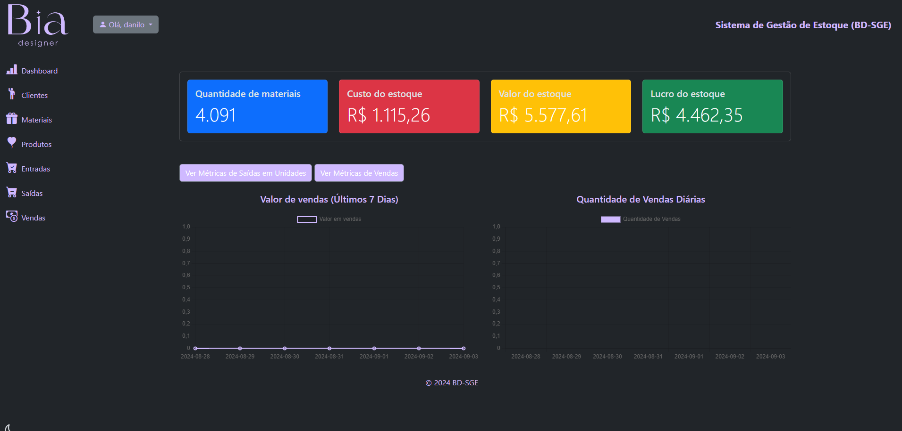
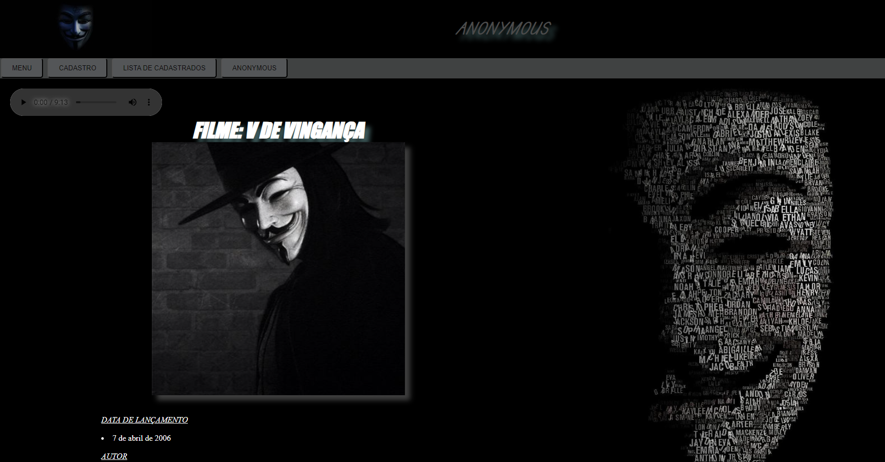
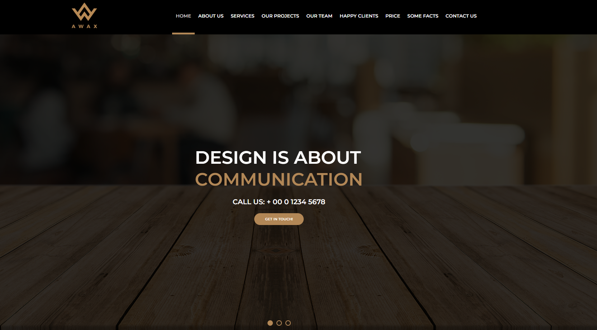
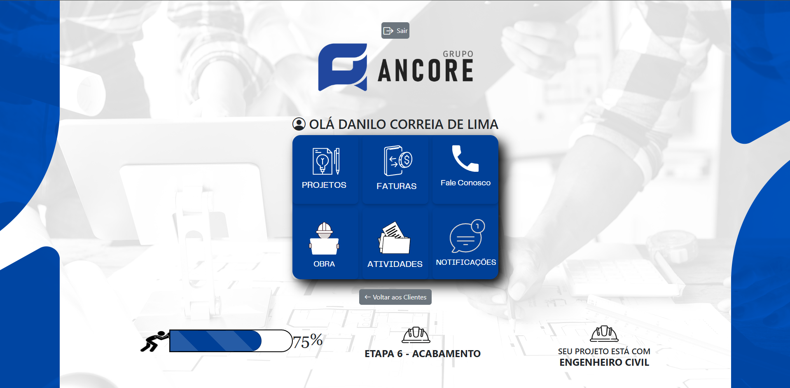

PROJETOS
-
BDSGE
BDSGE
Sistema de Gestão de Estoques e Vendas
Aplicação web para gestão de estoques e vendas, desenvolvida para pequena empresa, Bia Designer. • O BDSGE é uma aplicação web desenvolvida com Django para gerenciar estoques e vendas de produtos, publicada na AWS. Com funcionalidades como controle de estoque, registro de vendas, e gestão de clientes (físicos e jurídicos), o sistema permite também a administração de produtos compostos, ajustando automaticamente o inventário de seus componentes. Este projeto, além de melhorar minhas habilidades em Python e Django, representa uma solução prática e eficiente para pequenas e médias empresas que precisam de um controle preciso e flexível de seus negócios.
 -
ANONYMOUS
ANONYMOUS
Aplicação de portfólio e cadastro de pessoas
Aplicação web de portfólio e cadastro de pessoas, inspirado pela filosofia do Anonymous. • Este projeto representa um marco significativo em minha jornada de desenvolvimento, sendo meu primeiro em que utilizei HTML e CSS. Através da aplicação de conceitos fundamentais dessas linguagens, consegui criar um ambiente envolvente, demonstrando meu compromisso com o aprendizado contínuo e o aprimoramento das minhas habilidades na área de desenvolvimento web. Clique Aqui para acessar !
 -
PROJETO AWAX
PROJETO AWAX
Site Corporativo
Aplicação web Desenvolvimento de Site Corporativo. • Desenvolvi um site corporativo completo para uma empresa fictícia, proporcionando uma presença online robusta e informativa. • Garanti uma experiência de usuário consistente em diferentes dispositivos, incorporando design responsivo usando HTML5 e CSS3. Clique Aqui para acessar !
 -
IA ASSISTENTE
AI ASSISTENTE - Chat Multimodal
Aplicativo de Inteligência Artificial Multimodal
Aplicação web desenvolvida para uma empresa de engenharia civil, elétrica e arquitetura. • AI Assistente é uma solução personalizada desenvolvida para oferecer interações multimodais com inteligência artificial. A aplicação permite que os usuários se comuniquem por texto, áudio ou imagens, aproveitando uma experiência rica e dinâmica. O sistema é capaz de: Gerar imagens a partir de descrições textuais. Interagir por texto com respostas contextuais e inteligentes. Transcrever áudios enviados pelos usuários para texto, facilitando a comunicação. Converter texto em áudio, tornando as interações mais acessíveis. Ler e interpretar documentos PDF, oferecendo resumos e respostas sobre o conteúdo..

-
ANCORE
ANCORE
Sistema Ancore
Aplicação web desenvolvida para uma empresa de engenharia civil, elétrica e arquitetura. • ANCORE é uma solução personalizada criada para gerenciar obras e projetos, permitindo que os clientes da empresa acompanhem o andamento de suas obras e projetos em tempo real. O sistema também oferece notificações automáticas sobre atualizações importantes, como emissão de faturas e alterações nos projetos e agendas, as Principais funcionalidades incluem: Cadastro de pessoas (clientes, profissionais e fornecedores), Acesso personalizado ao sistema para monitoramento de projetos individuais, Integração de notificações automatizadas para manter os usuários informados, Sistema de login seguro e controle de permissões, Interface intuitiva, responsiva e acessível em diferentes dispositivos.
